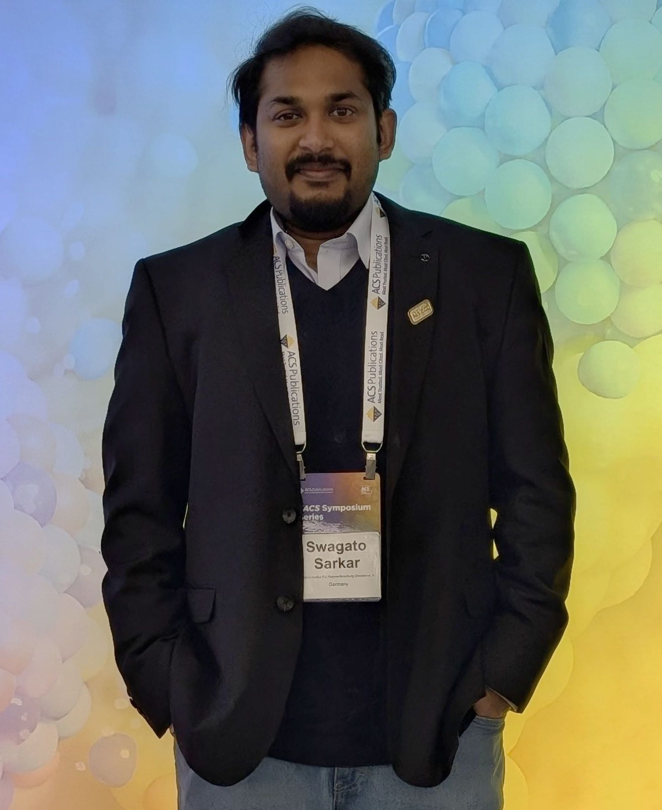

Dr. Swagato Sarkar works in the field of nanoengineered photonic and plasmonic systems, with a focus on functional nano interfaces for light-matter interactions, sensing, and energy conversion. He obtained his PhD in Physics from the Indian Institute of Technology Delhi in 2021, where his research focused on the design and fabrication of periodic nanophotonic architectures using interference lithography. His doctoral work established cost efficient fabrication strategies for optoplasmonic devices and laid a strong foundation in nanofabrication, optical characterization, and device oriented design.
Following his PhD, he joined the Leibniz Institute for Polymer Research Dresden as a postdoctoral researcher, where he expanded his work toward plasmonic functional surfaces, supracolloidal assemblies, and hybrid photonic plasmonic systems within the Functional Colloidal Materials department led by Prof. Andreas Fery. During this period, he developed scalable assembly approaches and integrated fabrication workflows that bridge bottom up methods with lithographic patterning. He is currently a Research Scientist at the Helmholtz Zentrum Dresden Rossendorf in the Nano Microsystems for Life Sciences group led by Prof. Larysa Baraban, where his work focuses on nanoengineered optical biointerfaces and lab on chip platforms.
In addition to his research activities, Dr. Sarkar has taken on scientific coordination and mentoring responsibilities, including supervising students and supporting laboratory operations during group level transitions. His experience includes guiding experimental design, data analysis, and scientific communication across multiple research projects.

Dr. Sarkar has developed an independent research profile at the interface of plasmonics, photonics, and functional materials, with a strong emphasis on understanding and engineering structure property function relationships in nanoengineered systems. A huge part of his work involves the translation of nanoscale optical phenomena into device relevant functionalities, particularly through the development of hybrid plasmon photon coupling platforms based on colloidal assemblies.
For the first time, Dr. Sarkar has demonstrated colloidal photonic crystal slabs in which plasmonic nanoparticle chains interact with guided photonic modes to form hybrid excitations with tunable optical properties. These systems provide scalable alternatives to conventional photonic architectures and enable applications in sensing, optoelectronics, and photocatalysis. He has further explored plasmon enhanced charge transfer, photoconductivity, and catalytic processes, highlighting the relevance of these systems for energy conversion and functional interfaces.
His research spans the full workflow from design to device implementation, combining nanofabrication techniques such as interference lithography, template assisted self assembly, and soft lithography with advanced optical characterization and electromagnetic simulations. This integrated experimental and computational approach enables predictive design of optical responses, including resonance engineering, near field enhancement, and chiroptical effects.
A notable aspect of Dr. Sarkar’s profile is his role as Lead Editor of the forthcoming Royal Society of Chemistry volume Nano Assemblies for Future Technologies, coordinated together with Prof. Andreas Fery and Prof. Paul Mulvaney. In this role, he has coordinated contributions from leading researchers across Europe, Asia, Australia, and the United States, ensuring scientific coherence and quality across the volume.
This experience reflects his ability to engage with international research communities, manage large scale academic collaborations, and contribute to shaping research directions in the field of nanoassemblies and functional nanomaterials.
Dr. Sarkar’s research is inherently interdisciplinary and supported by a strong international collaboration network spanning Europe, Asia, and the United States. His collaborations cover areas such as plasmonic photocatalysis, chiral nano assemblies, surface enhanced spectroscopy, and hybrid photonic systems, integrating expertise in materials synthesis, optical modeling, spectroscopy, and device engineering.
He has authored more than 35 peer reviewed publications with over 1450 citations and an h index of around 16, in leading journals including Advanced Materials, ACS Nano, Advanced Functional Materials, Advanced Optical Materials, and ACS Applied Materials and Interfaces. In addition, he actively contributes as a peer reviewer and presents his work at international conferences, including invited talks.